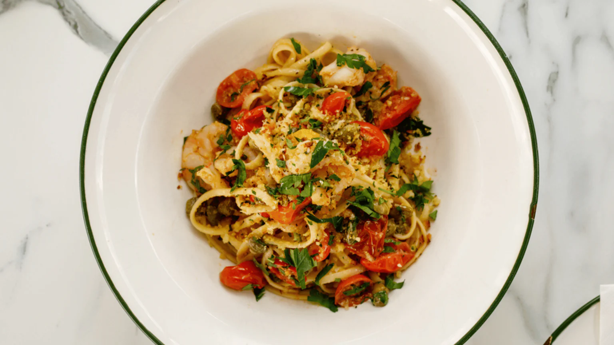

Home
Garlic Chilli Prawn Linguine

Description
This chilli and garlic prawn linguine recipe takes inspiration from Italy’s south, particularly the region of Campania. From Sorrento and the Gulf of Naples to the awe-inspiring Amalfi Coast, Campania’s long coastline means that i frutti di mare – ‘the fruits of the sea’ – play a major part in the region’s cuisine.
Prawns, known as scampi in Italian, are just one example. Although eaten in all manner of ways, these juicy morsels are perhaps best when paired with three of the region’s other calling-cards: fresh tomatoes, bright lemons and red chilli (which all grow in abundance across Campania). Together, they sing of the region’s love and appreciation for simple produce, done well.
Ingredients (Serves 2)
- 180g Linguine
- 225g King Prawns
- 125g Tomatoes
- 3 Garlic Cloves
- 50g Butter
- 1 White Wine Stockpot
- Pink Himayalan Salt
- Red Pepper Flakes
- Olive Oil
Method
- Bring a large pan of water to the boil, then salt well and stir. Add the linguine, stir again and cook until al dente.
- While the linguine is cooking, warm a large frying pan over a low heat. Add the olive oil, garlic and chilli and let fry gently for a minute or so, until fragrant (make sure you don’t let the garlic colour too much). Add the tomatoes and cook for a minute more.
- Add the prawns, give everything a good stir, then raise the heat to medium and add the wine stockpot (following the instructions on the packaging) and a pinch of salt. Allow it all to simmer away for 3 minutes.
- Drain the linguine, remembering to reserve around 100ml of the cooking water, then add the linguine to your sauce. Add the lemon, parsley and a splash of linguine cooking water, then toss everything together until well combined.
- Transfer to bowls and serve immediately, buon appetito!